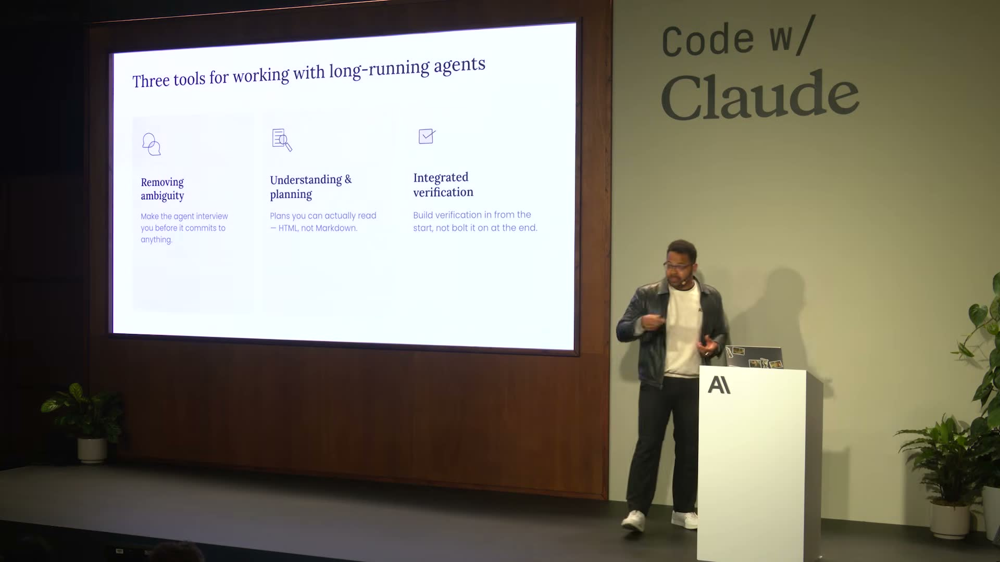
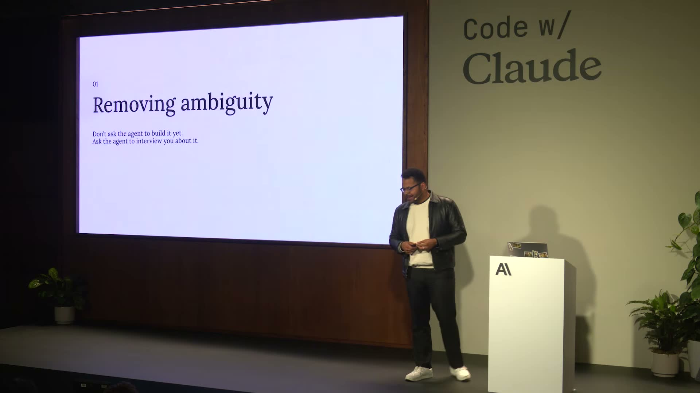
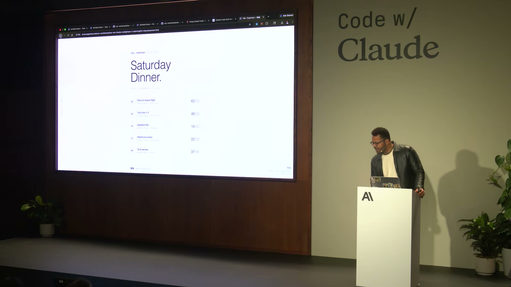
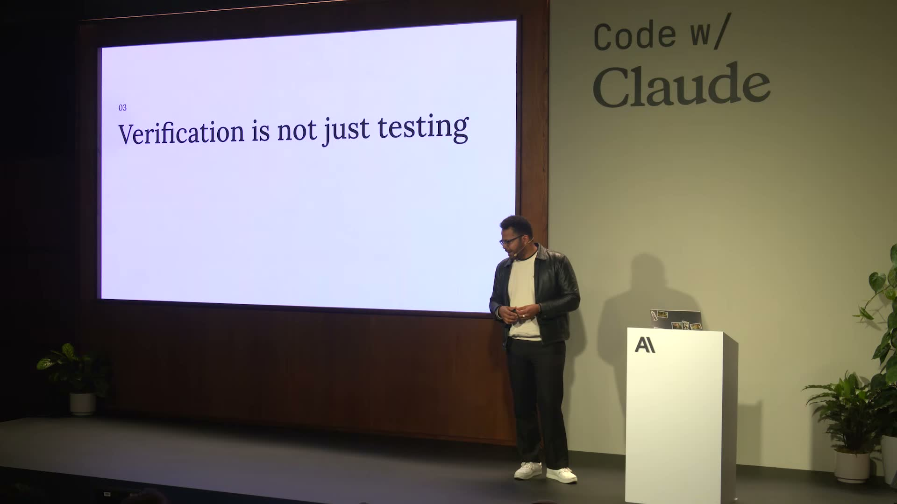
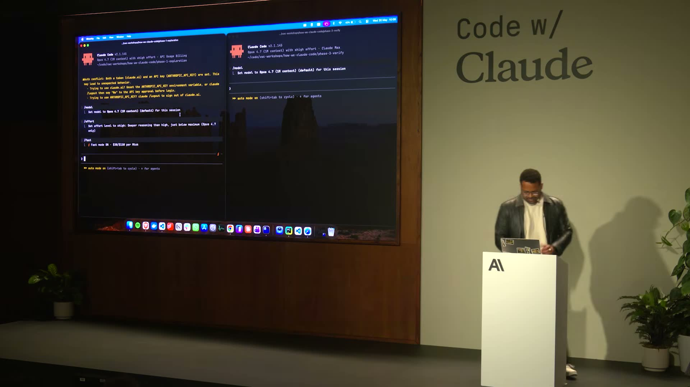

이 영상은 Claude 팀이 직접 "우리는 Claude Code를 이렇게 쓴다"를 공개한 워크숍(Code w/ Claude)이다. 핵심 메시지는 하나다. 에이전트가 몇 분이 아니라 몇 시간을 돌게 된 지금, 일하는 방식 자체를 바꿔야 한다는 것. 팀은 그 방법을 세 가지 — 모호성 제거, 이해와 기획, 통합 검증 — 으로 정리한다.
에이전트는 점점 더 길고 복잡한 작업을 자율적으로 수행한다. 실행 시간이 길어질수록 잘못된 방향으로 들어섰을 때의 비용도 커진다. 그래서 "끝에서 고치는" 게 아니라 "시작에서 어긋나지 않게 하는" 쪽으로 무게중심이 옮겨간다.
Agents now run for hours, not minutes, and do more work than ever before.에이전트는 이제 몇 분이 아니라 몇 시간을 돌며, 그 어느 때보다 많은 일을 한다. (02:23)
팀은 효과적인 협업을 세 축으로 나눈다. 슬라이드 한 장에 핵심이 압축돼 있다.

좋은 결과의 출발점은 정확한 요구사항이다. 그런데 팀의 관찰은 역설적이다. 사용자가 스스로 요구사항을 정의하는 것보다, 모델이 사용자에게 질문해 요구사항을 끌어내는 편이 더 정확하다는 것. 그래서 "바로 만들라" 대신 "먼저 나를 인터뷰하라"고 시킨다.

The model is probably better at extracting requirements from you.모델은 아마 당신에게서 요구사항을 끌어내는 데 더 능하다 — 당신이 직접 정의하는 것보다. (04:45)
마크다운은 AI 네이티브 개발의 공용어가 됐지만, 형식이 다소 제약적이다. 팀은 기획·소통 문서를 HTML로 옮기면 같은 공간에 더 많은 정보를 담을 수 있고, 사람이 보기에도 더 편하다고 본다. 계획서가 곧 레이아웃이 되는 셈이다.
Plans you can actually read — HTML, not Markdown.실제로 읽을 수 있는 계획서를 — 마크다운이 아니라 HTML로. (05:30, 슬라이드)
구현에 바로 들어가는 대신, Claude로 UI 레이아웃을 먼저 생성해 눈으로 확인한다. 영상에서는 지출 정산(더치페이) 화면을 예로 든다. 코드를 짜기 전에 "무엇을 만들지"를 시각적으로 합의하는 단계다.

가장 강조되는 부분이다. 검증은 단순한 테스트가 아니라, 에이전트가 스스로 결과를 확인할 수 있도록 시스템을 설계하는 일이다. 팀은 "에이전트 네이티브 검증 시스템"을 만들어, 사람이 읽을 수 있는 대시보드와 에이전트가 직접 돌리는 검증, 헤드리스 실행을 결합한다.

Build for it from the start, don't bolt it on at the end.처음부터 검증을 위해 설계하라. 끝에 가서 덧붙이지 마라. (08:31)
발표에서는 Claude Code 세션을 둘로 나눠 탐색(phase-1)과 검증(phase-3)을 나란히 돌리는 모습을 보여준다. 사람이 읽는 대시보드로 상태를 보고, 에이전트가 검증을 주도하며, 헤드리스로 반복 실행한다 — 검증이 워크플로에 녹아 있다.

팀은 Opus 4.7의 향상된 비전(vision) 능력이 HTML 기반 스펙·레이아웃 작업과 특히 잘 맞는다고 정리한다. 핵심은, 점점 더 유능해지는 에이전트를 감독하려면 소통과 검증의 방식 자체가 더 정교해져야 한다는 것이다.